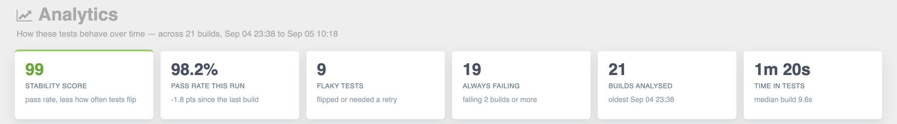
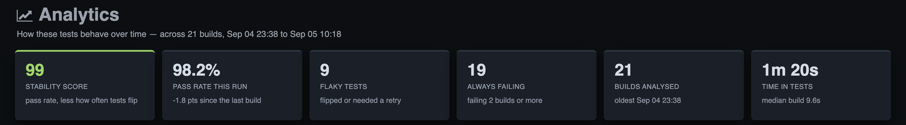
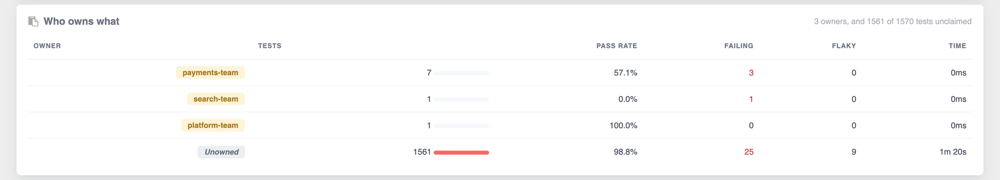
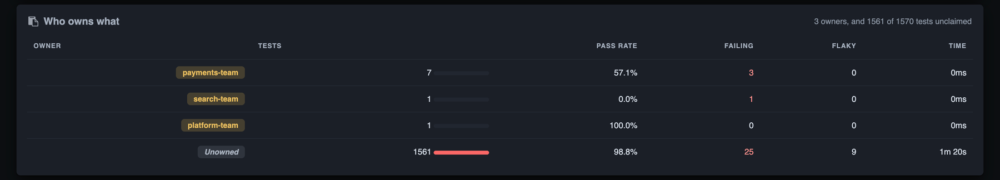
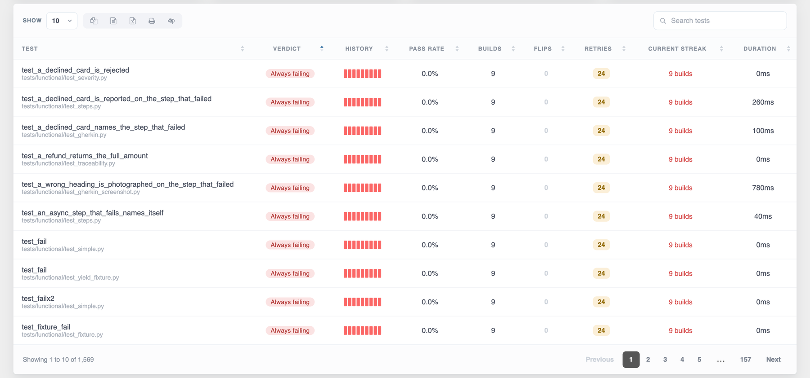
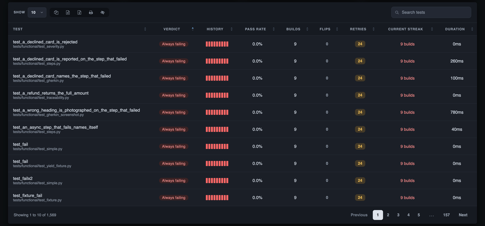
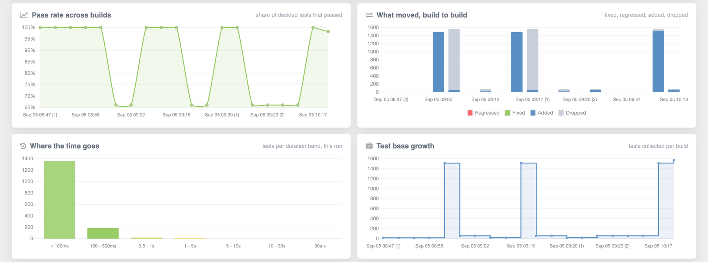
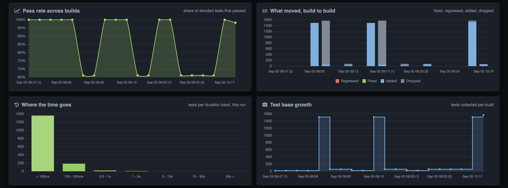

Analytics
The Dashboard answers how did this run go, and reads one build to do it. Analytics answers how does this test behave, which no single build can — so it reads every build the report has kept. Nothing extra is collected for it: the archives have been carrying a status per test all along, and had simply never been read across files before.
History that was already on disk
A test that failed once and a test that has failed every night for a fortnight look identical on the Dashboard. They are not the same problem, and telling them apart needs more than one build.
Every build this plugin has written left an output.json beside the report, and each
of those carries a status, a failure message, a rerun count and a duration for every test in it.
When the next build writes its report, that file is renamed into archive/ and a fresh
one takes its place. So a per-test history has been accumulating on disk since the first run — the
Analytics tab is what reads it.
report/
├── pytest_html_report.html
├── output.json the build being reported now
└── archive/
├── output_1788425529.352927.json the builds before it, oldest first
├── output_1788426203.302967.json
├── output_1788426293.530508.json
└── output_1788426639.262306.jsongenerate_analytics() runs once per build, and it runs after retention has
pruned the archives. The history the tab describes is therefore exactly the history the
report ships with — there is no state in which the page talks about builds the file no longer
holds.
How the builds are read
-
Glob and load
Every
archive/*.jsonis read withjson.load. A half-written or hand-edited archive is skipped rather than taking the whole tab down — the other builds still have something to say, and one unreadable file is not a reason to show nothing. -
Stamp and sort
Each build is stamped with the
start_timeinside the file, falling back to the file's mtime, and sorted on that. The archive's name carries the same kind of number, but as text — where1788194287.2sorts after1788194287.271306. -
Append the current run
output.jsongoes on the end as the newest build, stamped with its ownstart_timeor, failing that, the current time. -
Make the labels distinct
Axis labels are
Sep 03 14:18. A pipeline that runs the suite three times inside a minute produces three builds stamped to the same minute, and three identical ticks on one axis is a chart nobody can read — so repeats are numbered,Sep 03 14:18 (2), rather than given seconds. The seconds are not what anyone is looking for.
What a build is reduced to
Each build is flattened to the handful of things the analytics actually read.
- Tests are keyed
<suite_name>::<test_name>. That is the only identity an archive carries —nodeidis not written intooutput.json— and it is stable from build to build, which is the whole requirement. - Every status is reduced to one of three things:
fail(FAIL and ERROR),skip(SKIP),pass(everything else). xFAIL and xPASS sit on the pass side: both are outcomes the suite declared in advance, neither turns a build red, and counting an expected failure against a test's pass rate would make everyxfail-marked test look like the least reliable thing in the suite. - The raw failure message is kept, because the failure grouping reads the exception back out of it.
- Build duration is the sum of the per-test durations, or
Noneif no test in that build recorded one. Builds archived before per-test durations were written never measured this, and drawing them as instant would invent a cliff in the duration trend that never happened.
What it buys, and what it costs
- Nothing to install and nothing to configureThe tab appears because the archives are there. There is no database, no service, no upload step and no API key.
-
The history travels with the fileEverything the tab draws is baked into the one
HTML document at generation time. It answers the same questions off a CI artifact server, out of
an email attachment and from
file://on a laptop with no network. - It is honest about a first runOne build is a perfectly ordinary first run, not an error. The tab says this run only - history builds up as you run again and shows the panels that are real from run one, rather than drawing four empty axes.
The costs are the other side of the same design, and they are worth knowing before you read a number off the tab:
- The history is only as long as retention kept. Whatever
--archive-count,--archive-daysand--archive-sincedeleted is gone from the maths as well as from the Archives section. - Identity is the suite plus the test name. Renaming a test, or moving it to another file, reads as the old one disappearing and a new one arriving — which is exactly what the No longer run and New tests cards will show.
- Every retained build is weight in the page. Roughly 5KB of it, and it is cumulative. See the size arithmetic.
- Archives from an older release are read as far as they go. A build written before per-test durations were recorded has no duration key, and is read as not measured — never as zero.
The fixed numbers
Nothing on the tab is tunable. These are the bounds it is built on, and each of them is a readability limit rather than a maths one — the tables behind them still count every build on disk.
| Constant | Value | What it bounds |
|---|---|---|
TREND_BUILDS | 20 | Builds the trend charts draw. Forty labels on one axis is unreadable; the tables still read every build kept. |
SPARK_BUILDS | 12 | Outcomes shown in a test row's History strip. |
TOP_SLOWEST | 10 | Rows in the slowest-tests chart. |
MOVEMENT_NAMES | 6 | Test names shown on a movement card before the rest go behind "and N more". |
BROKEN_STREAK | 2 | Consecutive failing builds before a test counts as consistently failing. |
FAULT_TYPES | 8 | Exception groups listed in the failure panel; the tail is counted and one click away. |
FAULT_NAMES | 4 | Test names shown under each exception group. |
DURATION_EDGES | 0.1, 0.5, 1, 5, 10, 30 | Bucket edges for the duration histogram, in seconds. |
The six figures across the top
Six tiles, in this order. Each carries a value, a label and a note that says what the value is made of, because a number with no note is a number people argue about.
| Tile | What it is | Its note |
|---|---|---|
| stability score | One number, 0–100, for how much the suite can be trusted. Graded strong ≥ 80 fair ≥ 60 low. | pass rate, less how often tests flip |
| pass rate this run | 100 × pass / (pass + fail) over the current build's counts, to one decimal. Skips excluded. | The drift: no earlier build to compare, level with the last build, or +2.3 pts since the last build. |
| flaky tests | How many tracked tests have flipped, or needed a retry. | flipped or needed a retry |
| always failing | How many tests have never passed and are two builds into a failing streak. | failing 2 builds or more |
| builds analysed | Every retained build, not the 20 the charts draw. | The oldest build's label, oldest Aug 28 09:12. |
| time in tests | The current build's total test duration. | median build 4.5s across every build that recorded one, or not recorded in this run. |


The stability score
Two things make a suite untrustworthy and they are not the same thing: tests that fail, and tests that will not say. So the score starts at the mean per-test pass rate and is then charged half of the mean flip rate.
rated = [h for h in tracked.values() if h['pass_rate'] is not None]
mean_pass = sum(h['pass_rate'] for h in rated) / len(rated)
mean_flip = sum(h['flip_rate'] for h in rated) / len(rated)
score = max(0, min(100, int(round(mean_pass - 50.0 * mean_flip))))A test alternating pass, fail, pass has a 50% pass rate and tells you nothing, and should
not score the same as one that half the team already knows is genuinely broken. Tests with no pass
rate at all — only ever skipped — are excluded; with none left the score is unknown and shows
--.
Why this run failed
Every failure in the current build is grouped by the exception it came out of, biggest group first, with the share of the run it holds, the tests in it by name, and how it has moved since the last build.
The names matter as much as the count. 9 TimeoutException says what broke; the names say whether it is one page object nine tests go through or nine unrelated waits, and those are different mornings.


What goes into the grouping
- FAIL and ERROR together. A test that blew up in a fixture failed for a reason worth grouping, and the reason is in the same field. Errors are counted beside failures everywhere else on the tab, so they are grouped beside them here too.
xfailis not grouped. It is an outcome the suite asked for, not one anybody is triaging.- The panel reads the current build alone. Every longitudinal panel below it is blank until there is a second build; this one is answerable on a first run — and a first run that is red is exactly when somebody wants it.
- A green run leaves the card out rather than standing empty. There is nothing to group, and an empty panel headed "Why this run failed" answers a question nobody asked.
Reading the exception out of a message
Nothing new is collected for this. What is stored against a failing test is what pytest printed — and by the time a build has been archived it is text and nothing else. So the type is read back out of the message, in one pass over its lines, with these rules.
- ANSI colour is stripped first. It is invisible in the report, but it sits between the start of a line and the exception name, and would stop the name matching at all.
- pytest's
Emarker is stripped. A failure has had it removed by the time it is stored, but an error keeps the whole traceback as printed — and the exception is on one of the marked lines. - A candidate line has to match at its start: an optionally dotted name
beginning with a capital, then a colon or the end of the line.
^((?:[A-Za-z_]\w*\.)*[A-Z]\w*)\s*(?::|$). The anchor is the point — an assertion diff prints lines like- ValueError: nope, and that is a string being compared, not something that was raised. - A dotted name is cut to the class.
selenium.common.exceptions.TimeoutExceptionandTimeoutExceptionare one group; which of the two a message carries is down to how the traceback was rendered rather than to what went wrong. - A name ending in
Error,Exception,Failure,Failed,Skipped,Timeout,Interrupt,AbortorExitis read as raised, and the last such line wins. A chained failure prints the original traceback first and the exception that actually surfaced last — which is the one pytest itself reports. This suffix rule is also what keeps Selenium'sMessage:lines out: a WebDriver error printsTimeoutException: Message: ...and then moreMessage:lines under it. - Any other capitalised name is kept from the first line, where a plain traceback puts its headline.
- A bare
assertline is read asAssertionError. pytest prints those with no type name at all, and they are far too common a failure to leave sitting in the unclassified pile. - Nothing found puts the failure in
Unclassified.
| Message | Group | Why |
|---|---|---|
AssertionError: assert 1 == 2 | AssertionError | Named at the start of the line, and the suffix says it was raised. |
assert 1 == 2 | AssertionError | The bare-assert rule. |
E TimeoutException: Message: element not found | TimeoutException | The E marker is stripped; the Message: lines under it carry no raised suffix. |
selenium.common.exceptions.TimeoutException: ... | TimeoutException | The dotted name is cut to the class. |
A chained traceback ending in RuntimeError | RuntimeError | The last raised name wins — the exception that surfaced. |
- ValueError: nope (an assertion diff line) | Unclassified | The pattern is anchored at the start, so the diff marker rules the line out. |
Failed: DID NOT RAISE | Failed | pytest's own pseudo-exception; Failed is in the suffix list. |
| Free text naming no exception | Unclassified | Nothing matched. |
Ranking, share and movement
Groups are ranked biggest first, with ties broken by name so the order is stable between two runs
that failed the same way. Unclassified is held at the bottom however large it
grows: a panel headed by Unclassified: 40 has answered nothing.
Each group's share is its count as a rounded percentage of the run's failures. Its movement is its count minus the same group's count in the previous build, and it is worded rather than always signed:
| Reads | When | Why not just the number |
|---|---|---|
| nothing at all | There is no previous build. | Not the same thing as a group that has not moved, so it is not drawn the same way. |
level | The count is unchanged. | +0 beside a failure count reads as noise. |
new | The delta equals the count — the last build had none of these. | +3 reads as three more of something that was already there. A failure mode the last build did not have at all is the more interesting of the two. |
+2 / -1 | Everything else. | Tinted up or down, so the direction reads before the number does. |
The one line the panel is worth reading for
The count on its own is already on the Dashboard. The headline is the second half — where to start — and it is four different sentences rather than one with a suffix:
| Headline | When |
|---|---|
| 12 failures, 9 are TimeoutException | A lead exists. |
| all 12 failures are TimeoutException — or the one failure is a TimeoutException | One group is everything. |
| 12 failures, every one a different exception | Nothing groups with anything. Naming the first of twelve one-offs would read as a lead, and that a run failed twelve different ways is itself the finding. |
| 12 failures, none of them naming an exception | Everything landed in Unclassified. |
The panel lists the top eight groups with up to four test names each. Beyond that, the tail is counted rather than dropped — and 4 more types, 7 failures between them — and opens in the same dialog as everything else on the tab, with the count of failures in each.
Who owns what
owner, worst first. A run with forty
failures spread over six teams and a run with forty in one team read identically everywhere else on
this page, and they are not the same morning.The panel is drawn as soon as anything in the run carries @pytest.mark.owner(...),
and not at all before that. Each row holds the tests that team owns, the share of the suite that is,
their mean pass rate, how many are failing now, how many are flaky and where their minutes go.
- A test with two owners counts for both. Picking one would quietly take a team off the hook for a test they had put their name on.
- Only tests this run actually ran are counted. A test deleted three builds ago is nobody's morning, and leaving it in makes a team's numbers impossible to fix.
- Ownership is read from the most recent build that named one rather than unioned across history: a test that moved teams last month should page the team that has it today, not both.
- The pass rate is the mean of the tests' own rates rather than passes over runs, so a team holding one test that has run two hundred times and forty that ran once does not have the two hundred decide their number.
- Unclaimed tests are a row, not a gap, sorted last whatever their numbers — unowned is not a team, and reading it in among them invites somebody to go and find out who Unowned is. The line above the table says how much of the suite it is.
- Every owner is drawn rather than a top few, and the panel scrolls: a team cut off the bottom of the list is a team that does not know it has work.
owner is written into
output.json from 0.4.1 on, which is what lets this panel read
across builds at all. Builds archived by an earlier version carry no key and are read as unclaimed
rather than as anything invented, so the table fills in as the archive turns over.

How much it matters
severity level, beside Who owns
what. Forty failures at trivial and two at blocker are the same number
on every other tab and are not remotely the same run.The rows carry the same figures as the owner table, and the headline over them leads with what somebody came to the tab to find out — 1 critical test failing — rather than with the totals.
- Ladder order, not its own numbers. Sorting the table by what is in it would
put
trivialaboveblockerand argue with the words in it. The order isblocker,critical,normal,minor,trivial, then anything unrecognised, then Unrated last. - Unrated is a row of its own. A test nobody rated is not a
normaltest, and drawing it as one would bury the four tests somebody did rate under six hundred they did not. - The panel is not drawn at all for a run that rated nothing, so a suite using neither marker sees the tab it had before.
severity is written into
output.json alongside owner. Builds archived by
an earlier version carry no key and are read as unrated.Flaky tests
What it means. The test has given two different answers to the same question. It either flipped between passing and failing across builds, or it needed a retry inside a single build.
How it is derived. Every build a test appeared in becomes a point in its history, and the points are summarised:
| Number | Derived from |
|---|---|
flips | How many times consecutive decided outcomes differ. pass → fail → pass is two flips. |
flip_rate | flips / (decided - 1), or 0.0 with fewer than two decided builds. This is what the stability score is charged against. |
reruns | The rerun counts summed across every point — retries inside builds, not across them. |
flaky | any flips or any reruns — then forced off if the test is broken. |
A rerun on its own is enough. It is the least ambiguous flake evidence there is: the same code,
the same build, two different answers. That signal only exists if
pytest-rerunfailures is installed and retries were budgeted — counting
attempts is the only reliable measure available, because --reruns, the ini key and
@pytest.mark.flaky(reruns=n) can each set a different one.
How to act on it. Open the per-test table, which already opens worst-behaved first, and read the row: its History strip is the last twelve outcomes oldest-first as one block per build, and beside it are the flip count, the retry count and the current streak. A strip that alternates is a race or an ordering dependency; a strip that is solid green with a retry count is something that only fails under load.


Standing failures
What it means. The test has never passed in any retained build, and it has been failing for at least two builds running. One failure is a failure; a standing one is a different conversation.
How it is derived. A test is broken when it has decided at least
once, its fail count equals its decided count, and its streak has reached
BROKEN_STREAK (2). The streak is how many decided builds the newest outcome has
held for, uninterrupted.
The same history drives the verdict on every row of the table, and the wording is careful not to claim more than the history supports. Unreliable is a claim about a pattern, and a test that failed the only build it was in has not shown one yet — it has simply failed.
| Verdict | When |
|---|---|
| Always failing | Never passed, and failing two builds or more running. |
| Flaky | Flipped between outcomes, or needed a retry. |
| Failing | Pass rate of 0, but not yet a two-build streak. |
| Stable | Pass rate of 100. |
| Skipped | No pass rate at all — the test has only ever been skipped and has decided nothing. Shown as --, not as 0, and sorted as -1. |
| Unreliable | Everything else: a pass rate strictly between 0 and 100, with no flips and no retries recorded. |
| Not in this run | Overrides every verdict above when the test's last point is not the current build. |
How to act on it. The table's default order is the triage order: consistently failing first, by longest streak then name; then flaky, by flip rate then retry count; then everything else by pass rate, with tests that have decided nothing last. It is sortable, but what it shows before anyone touches it should already be the list to work through.
A test that has decided nothing shows -- for its streak rather than
0 builds, which would read as a measurement rather than as the absence of one.
Pass-rate drift
What it means. Whether the suite is getting better or worse, as a line rather than as today's number.
How it is derived. Each build's rate is computed off that build's own counts, not
off the per-test histories: round(100 * pass / (pass + fail), 1), and None
when nothing was decided. A None point draws as a gap rather than as a
zero — a build in which everything was skipped did not have a pass rate of nought.
Four charts sit under the tiles. Two of them are drawn over the last twenty builds, a third set over the nineteen transitions between them, and the fourth reads the current run alone:
- Pass rate across builds — the drift itself. The axis is not pinned to 0–100, because a suite that lives between 96% and 99% is exactly the one whose two-point drops matter.
- What moved, build to build — the four movement counts stacked at each step.
- Where the time goes — the duration histogram.
- Test base growth — the per-build test count. The suite being added to, or quietly shrinking.
The headline drift on the pass-rate tile compares the current build with the one immediately before it, and is three different sentences rather than one phrase with a suffix: no earlier build to compare, level with the last build when the rounded difference is zero, or +2.3 pts since the last build.


Where the run's time goes
What it means. A histogram answers something a slowest-tests list cannot: two thousand tests at 300ms each is a different problem from ten tests at a minute, and both of those suites take ten minutes.
How it is derived. The current run's tests only are spread across seven bands. The first edge a duration is strictly under wins it; anything at or past 30 seconds falls into the overflow bucket, which is the one worth looking at.
| Band | Holds a duration of |
|---|---|
< 100ms | under 0.1s |
100 - 500ms | 0.1s up to 0.5s |
0.5 - 1s | 0.5s up to 1s |
1 - 5s | 1s up to 5s |
5 - 10s | 5s up to 10s |
10 - 30s | 10s up to 30s |
30s + | 30s and over |
If no test in the current run recorded a duration, both the labels and the values are emitted empty and the chart is not drawn — rather than drawn empty, which reads as a chart that failed to load.
The slowest tests chart takes the current run's tests, drops any whose duration is
zero, sorts descending and keeps the top ten. Dropping the zeroes is deliberate: a test that was never
timed at all measures nothing, and ten rows of "slowest test: no time at all" reads as a bug rather
than as a fast suite. From 0.4.3 a test that was timed keeps six decimal places rather than
two — two places of seconds is a 10ms floor, and every unit test quicker than that used to reach the
page as a flat 0.0.
Build-level duration is the sum of that build's per-test durations. The
time in tests tile shows the current build's total, with the median across
every build that recorded one as its note. Durations read as 0.44ms under a hundredth of a
second, 820ms under a second, 4.5s under a minute, 12m 04s
beyond it, and -- when unknown. The two decimals at the bottom of that ladder are the whole
of the figure for a suite of unit tests: rounded to a whole millisecond, a run of them summed to
0ms, which says the run was never timed rather than that it was fast.
output.json from the release that shipped Analytics onwards. Builds archived by an
earlier version have no duration key and are read as not measured — so the duration
panels fill from the run that produced them, not retroactively.How to act on it. Weight in the last two bands is a small number of tests you can name and fix. Weight in the first two bands with a long wall clock is a fixture or a collection problem, not a slow test. The Test Steps tab is where you find out which phase of a named test the time went into.
The movement cards
What it means. The four numbers a standup asks for: what got fixed, what regressed, what tests were added, and what quietly disappeared.
How it is derived. Every consecutive pair of builds is walked, and each pair produces four lists:
| Card | List | Derived from |
|---|---|---|
| Newly failing | regressed | Present in both builds, pass → fail. |
| Newly fixed | fixed | Present in both builds, fail → pass. |
| New tests | added | A key in the newer build that the older one did not have. |
| No longer run | removed | A key in the older build that the newer one does not have. |
A test that was skipped in either of the two builds is neither fixed nor
regressed: only fail → pass and
pass → fail count. And a test vanishing from the suite is
worth seeing — it is as often an accident as a decision, which is why No longer run is a
card of its own rather than a footnote.
All four counts across the recent transitions are what the What moved, build to build chart stacks. The four cards show the latest step only. Each card writes every name it has into the page and shows the first six; the rest are hidden and revealed by the dialog. An empty card says Nothing rather than being hidden — a card that disappears when there is nothing in it makes the row jump about between builds.
On a first build there are no steps at all, and all four cards are empty.
How to act on it. Newly failing is the list to read before anything else on the tab: those tests passed in the build before this one, so the change that broke them is in the diff between the two. No longer run is the one people forget — a test that stopped being collected stops failing, and stops protecting anything.
The "and N more" dialogs
The dialog shows the card's own items, not a copy of them. A card renders every name it has and hides the tail with a class; opening the dialog is that hiding taken off. There is no second list in a data attribute to fall out of step with the first, and no test name written into the page twice.
-
It searches as you typeOver the text of the entries it is showing. A movement card
carries the suite under the test name, so
test_checkoutandtests/e2e/both narrow that list. -
The count says both numbers while a search is on
3 of 41 tests. Plain41 testsbeside thirty-eight filtered-out rows reads as a list that lost them; the total is what the card promised, and the pair is what the search has left of it. - A search that matches nothing says soNothing here matches that, rather than an empty panel.
- The search box takes focus as it opens, and Escape closes itThe same key that already closed the captured-output panel and the environment card.
- It counts the right nounA movement card and a failure group open a list of tests; the tail of the failure panel opens a list of types, each with the number of failures in it.
Archives and retention
How far back Analytics reads is whatever retention has kept. The three limits are the only control the tab has, and they are ordinary flags on the run — or, better, keys in the ini file.
The three limits
How many builds to keep. It is handled as text rather than as a number, because
'' and '0' are different answers and both are asked about later:
- Unset — no count limit at all.
0— the wholearchive/directory is removed and the Archives section is not rendered.N—N - 1files are kept on disk. The build being reported now is shown alongside the archived ones and counts against the limit.
Keep only builds newer than now - D days. Fractions are accepted —
0.5 is half a day. For a job on a schedule, where "the last 30 days" does not have
to be retuned every time the schedule changes.
Delete every archived build older than this moment — a one-off cut. Accepts
YYYY-MM-DD (midnight, local time), YYYY-MM-DD HH:MM and
YYYY-MM-DD HH:MM:SS.
How the three intersect
They intersect rather than combine. An archived build has to satisfy
every limit you set in order to survive: it must be no older than the cutoff and
among the newest keep files. Set none of them and every build is kept for ever.
When --archive-days and --archive-since are both given, the cutoff is
the later of the two — the stricter one, so neither can widen the other.
All three are validated by name: a non-numeric or negative --archive-count, a
non-numeric or negative --archive-days, or an unparseable --archive-since
each fail the run with a usage error rather than raising somewhere inside the render of a build that
had already rotated its archive.
$ pytest tests/ --html-report=./report --archive-days=30 --archive-count=60
# a rolling half day
$ pytest tests/ --html-report=./report --archive-days=0.5
# a one-off cut at a date and a time
$ pytest tests/ --html-report=./report --archive-since='2026-06-01 09:00'
# keep nothing but this build - no Archives section, no Analytics history
$ pytest tests/ --html-report=./report --archive-count=0[pytest]
html_report = ./report
archive_count = 60
archive_days = 30How a build is dated
A build is dated by the moment its run started, and that number is kept in the
name of its archive file — output_1788426639.262306.json. Retention ages files by
reading the name, with the file's mtime only as a fallback.
The name is used rather than the mtime deliberately. A checkout into a fresh CI workspace gives every file the mtime of the clone, so an age limit read from mtimes would decide that a year of history was written this morning and keep all of it for ever. The name survives being copied, zipped, downloaded as an artifact and unpacked somewhere else.
start_time, one build older, is inside the file, and that is what Analytics
sorts on.The size arithmetic
A retained build costs roughly 5KB of the page, and the cost is cumulative: the history is rendered into the one HTML document rather than fetched. That is fine for a suite run a few times a day and it is not fine for one run on a timer.
| Cadence | Builds after two months | History in the page |
|---|---|---|
| Nightly | ~60 | ~300KB |
| Every commit, 20 a day | ~1,200 | ~6MB |
| Hourly | ~1,450 | ~7MB |
An hourly run reaches a multi-megabyte report inside a couple of months with nothing set, and the symptom is a report that takes a long time to open rather than an error. Pruning the folder shrinks the page for free.
--archive-count to 5 does not only shorten the Archives section — it
shortens every pass rate, every flip count and every streak on the tab, permanently, because the
builds are deleted from disk.output.json — the archived build record
output.json sits beside the report and is the only thing that survives from
one build to the next. It is written at the end of every build as a single unindented line
of JSON.
Four things read it:
- The Archives section — the list of retained builds and their counts.
- The Trends chart on the Dashboard — which reads the current file and then the archive names newest-first, stopping after five, so the chart is at most six points. Analytics is the one that reads every retained build.
- The whole Analytics tab — everything on this page.
- The VS Code extension — which is a viewer over this
same file plus the rotated copies in
archive/. It runs no tests and parses no HTML.
output.json is not an interchange
format, and a sharded run does not merge these. There is no node id in it, no logs,
no steps, no attachments and no phases — a merge built on it would produce correct totals over an
empty report. The merge command reads shard bundles and
writes an output.json of its own, exactly as a pytest run does.The shape
{
"content": {
"suites": {
"0": {
"suite_name": "tests/unit/test_analytics.py",
"tests": {
"0": { "status": "PASS", "message": "",
"test_name": "test_only_a_failure_counts",
"rerun": "0", "duration": 0.0,
"owner": [], "severity": "" },
"1": { "status": "FAIL", "message": "AssertionError: assert 1 == 2",
"test_name": "test_totals",
"rerun": "2", "duration": 1.24,
"owner": ["payments-team"], "severity": "blocker" }
},
"status": { "total_pass": 1, "total_fail": 1, "total_skip": 0,
"total_error": 0, "total_xpass": 0, "total_xfail": 0,
"total_rerun": 2 }
}
}
},
"coverage": { "percent": 84.12, "statements": 5120, "covered": 4307,
"missing": 813, "branch": true },
"date": "September 03, 2026",
"start_time": 1788426639.262306,
"total_suite": 30,
"status": "FAIL",
"status_list": { "pass": "691", "fail": "1", "skip": "0",
"error": "0", "xpass": "0", "xfail": "0",
"rerun": "2" },
"total_tests": "692"
}Shapes a consumer must not tidy
Some of these are historical, and all of them are load-bearing.
| Key | Shape |
|---|---|
content.suites | Keyed by stringified integer index, not by suite name. Each suite's tests map is keyed the same way, by position within the suite. |
tests.<j>.rerun | A string. duration beside it is a number. |
tests.<j>.duration | Written for the sake of the build after this one: Analytics reads durations back out of the archives, and a number that was never stored is a number no later run can show. |
tests.<j>.owner | A list, in the order the markers were written, and empty for a test nobody claimed. New in 0.4.1, and written for the same reason as duration: the owner roll-up is a cross-build table, so ownership has to be in the file before it can be read across files. |
tests.<j>.severity | One string, already resolved between markers, or "" for a test nobody rated. New in 0.4.1. A build archived before it existed has no key, which reads the same way. |
tests.<j>.message | The failure text, stored raw. This is what the exception grouping reads. |
status_list | Run-wide totals, and every value is a string. So is total_tests. The Trends chart's "Failed" series is fail + error. |
status | "FAIL" if any suite recorded a non-zero total_fail or total_error; "PASS" otherwise. |
coverage | Present only when coverage was measured. Its absence means "not known", which is a different answer from zero and is the true one. |
start_time | The moment the build is filed under. It names the file the next build archives this one as, labels the trend point, and orders the builds in Analytics. |
date | "%B %d, %Y" — the day the tests ran. Both the Trends loader and the Archives loader parse this back out. |
Delta vs the previous build
The archives pay for one more thing, and it is not on the Analytics tab at all. Once there is a
build to compare against, the Dashboard's Highlights card gains a second entry
saying which way the suite is moving — ▲ +3 failures under
SINCE LAST BUILD, red when there are more failures than last time and green with a
▼ when there are fewer.
The absolute count tells you how bad this build is. The delta tells you whether it is getting better, which is the one you act on.
- Nothing to configure. It appears as soon as a second build has been archived.
- Hovering gives the two counts behind it — 12 failures this build, 9 in the
build before it — because
+3reads very differently against 3 than against 300. - "Failures" means failures and errors, which is exactly what the Trends chart plots as Failed. Both are read off the same per-build list, so the two can never disagree.
- No change is written
±0 failuresrather than0 failures, which besideSINCE LAST BUILDwould say the opposite of what it means. - A first build has nothing to compare against, and the whole entry — caption included — is left out rather than showing "no change" against a build that does not exist.
Where to go next
A tour of the report
Where the Analytics tab sits among the other eight, and what each of them answers.
Read moreCI integrations
Keeping the report folder across runs so a history exists at all — and merging a matrix into one build rather than four.
Read moreVS Code extension
The same output.json and the same archive/, read into a sidebar
beside your code.